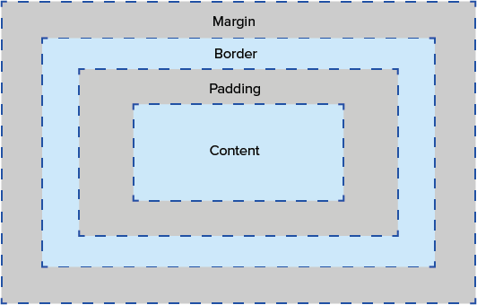

Structure, Phrasing and Display
In HTML, elements are categorized as structural (block) elements or inline elements. Block elements can contain inline elements. Block elements by default begin on a new line and take up the full width of a page, whereas inline elements can begin anywhere in a line and take up space depending on their size. The display property in CSS specifies how an element looks or is displayed. Default display is taken from the browser or HTML specifications. The display property can have values none, inline, block and inline-block.
Box Model

CSS box model is used for the design and layout of a page. It creates a box around every HTML element and includes margin, padding and borders along with the content. The box model lets us add a border around elements and control the space in between them. The box-sizing affects the total height and width of the element box, which changes the padding, margins and borders. Using the content-box value for box-sizing can allow us to only alter the layout of the content, excluding margins, padding, etc. Using border-box values will exclude the margins but include everything else.
Background Images
In HTML, to add an image we use the img tag. In CSS, we use background image as the tag. Usually, to use an image as part of the content and something which you do not need to decorate or write over, you should use the HTML img tag. For decoartive purposes like using an image for the background, you should use the CSS background image tag.